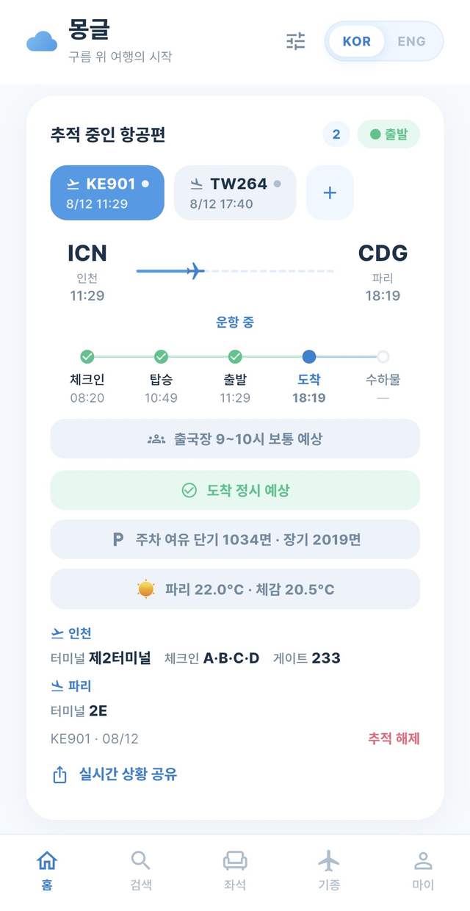

어떤 좌석을 피해야 할지,
게이트가 어디인지 —
몽글이 알려드려요
실제 기내 배치도 기반 좌석 추천, 기종 정보, 그리고 게이트·보안검색·수하물 벨트·주차·지연까지 짚어 주는 실시간 항공편 추적. 비행의 처음부터 끝까지 몽글 하나면 됩니다.
스토어 심사 준비 중이에요. 곧 만나요!

실제 추적 화면 — KE901 인천 → 파리, 실시간 운항 데이터
비행에 필요한 전부
좌석을 고르는 순간부터 짐을 찾는 순간까지.
좌석 추천, 피해야 할 좌석까지
실제 기내 배치도로 봅니다. 추천은 초록, 주의는 주황, 비추는 빨강 — 벌크헤드·갤리·화장실 옆·창문 없는 창가까지 짚어 드려요. 실제 탑승객 리뷰도 함께.
실시간 항공편 추적
공항 전광판이 쓰는 데이터 그대로 — 게이트·체크인 카운터·수하물 벨트·입국장. 비행 중엔 실제 위치 기반 진행률까지. 공동운항편이면 전광판에 뜨는 실제 운항 편명도 알려드려요.
알림이 먼저 알려드려요
체크인 오픈, 탑승 시작, 출발 카운트다운, 게이트 변경, 지연, 짐 나오기 시작까지. 전광판을 지켜보지 않아도 폰이 먼저 알려줍니다.
환승 안내
두 구간을 추적하면 하나의 여정으로 엮입니다. 환승 여유, 터미널 이동(공식 셔틀 소요시간), 입국·재수속 절차까지 — 앞 편이 지연되면 그 순간 경고로 바뀌어요.
실시간 상황 공유
링크 하나로 내 항공편 상황을 실시간 공유. 앱 설치 없이 열려서 마중 나오는 분도, 집에서 기다리는 가족도, 도착을 기다리는 회사도 바로 봅니다.
기종 정보
오늘 타는 비행기가 어떤 기종인지. 실사 사진과 스펙, 가습·여압·창문 크기·조명 같은 기내 환경까지 미리 봅니다.
출발 전날부터 짐 찾는 순간까지
실제 여행의 단계마다 몽글이 하는 일.
출발 전날 좌석 확인
편명만 검색하면 실제 투입 기종과 배치도를 찾아줍니다. 내 좌석이 어떤 자리인지, 리뷰는 어떤지 확인하고 필요하면 바꾸세요.
공항 가는 길 체크인 · 주차
출발 3시간 전 체크인 오픈 알림. 보안검색 대기 시간과 터미널별 주차 여유, 내 체크인 카운터까지 도착 전에 미리.
게이트 앞 탑승 · 카운트다운
탑승 시작 알림, 출발 30·20·10·5분 전 카운트다운. 게이트나 시각이 바뀌면 그 즉시 푸시가 옵니다.
비행 중 실시간 위치
실제 항공기 위치로 계산한 진행률과 남은 시간. 공유 링크를 받은 사람도 같은 화면을 실시간으로 봅니다.
도착 후 벨트 · 버스
수하물 벨트 번호와 입국장 출구, 짐이 나오기 시작하면 푸시. 나가는 시각에 공항버스 막차가 남아 있는지도 알려드려요.
공항 전광판 그대로, 더 자세하게
공항이 쓰는 데이터를 그대로 읽고, 전광판엔 없는 것까지 더합니다.
국내 전 공항 상세
인천 + 전국 14개 공항. 게이트·카운터·벨트에 보안검색 대기·주차 여유·공항버스 막차·도착지 날씨까지.
해외 공항 커버리지
전 세계 도착 예측, 공항이 공개하는 곳은 게이트·벨트까지. 내 공항이 어디까지 나오는지 결제 전에 확인할 수 있어요 — 산 뒤에 실망하는 일이 없게.
실시간 위치
지금 비행기가 지구 어디쯤인지, 추정이 아니라 실제 위치로. 시차까지 계산하니 14시간 비행이 7시간처럼 보이는 일은 없습니다.
여행 기간만큼만, 자동 갱신 없이
이용권은 단건 결제예요. 미리 사 두고 여행 갈 때 시작하세요 — 기간은 '시작'을 누른 순간부터 셉니다.
무료로도 좌석 배치도·기종 정보·항공편 1편 추적까지 쓸 수 있어요. 가격은 스토어 국가에 따라 다를 수 있습니다.
자주 묻는 질문
무료로는 뭘 쓸 수 있나요?
좌석 배치도, 기종 정보, 편명 검색, 그리고 항공편 1편의 실시간 추적(시각·상태·게이트 포함)까지 무료예요. 이용권을 시작하면 푸시 알림, 여러 편 동시 추적, 좌석 색상 추천, 리뷰 전체 열람이 열리고 광고가 사라집니다.
이용권 기간은 언제부터 세나요?
'시작'을 누른 순간부터입니다. 한 달 전에 미리 사 둬도 여행 전까지는 계정에 그대로 보관돼요. 이용 중에 다른 이용권을 시작하면 기간이 뒤에 이어붙고, 덮어써서 사라지는 일은 없습니다.
구독인가요? 자동 결제되나요?
아니요. 모든 이용권은 단건 결제입니다. 자동 갱신도, 재결제도 없어요. 기간이 끝나면 거기서 끝 — 다음에 필요할 때 다시 사면 됩니다.
어떤 공항을 지원하나요?
국내 15개 공항은 전부 상세하게 지원합니다. 해외는 도착 예측이 전 세계에서 동작하고, 게이트·벨트는 공항이 공개하는 만큼 나와요(홍콩·싱가포르·도쿄 등 다수 지원). 앱 안의 '내 공항 확인하기'에서 결제 전에 공항별 제공 범위를 볼 수 있습니다.
데이터는 어디서 오나요?
공항 운영사에서 직접 옵니다 — 인천국제공항공사·한국공항공사 공공 데이터로, 터미널 전광판과 같은 소스예요. 실시간 위치는 adsb.lol 커뮤니티 네트워크, 전 세계 스케줄은 AeroDataBox. 출처는 앱 안과 아래 푸터에 밝혀 두었습니다.